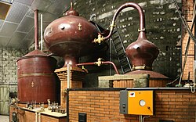
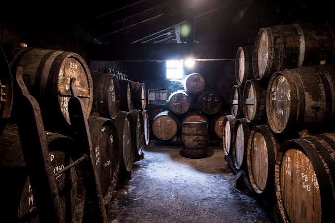

Cognac
AOP


⟹ Vins & Boissons ⟸
Le Cognac est l'eau-de-vie la plus célèbre du monde. Produit dans la région charentaise depuis le XVIIe siècle, ce spiritueux d'exception doit son nom à la ville de Cognac, au cœur de la Charente. Sa renommée mondiale tient à une combinaison unique et irremplaçable : un terroir calcaire exceptionnel, un cépage blanc particulier, une double distillation en alambic charentois et un vieillissement lent en fûts de chêne du Limousin.

L'histoire du Cognac commence véritablement au XVIIe siècle, lorsque les marchands hollandais, grands acheteurs de vins charentais, commencent à distiller les vins locaux pour faciliter leur transport en mer. Ils découvrent alors qu'en distillant deux fois ce vin blanc acide, ils obtiennent une eau-de-vie d'une qualité et d'une finesse remarquables. C'est la naissance du Cognac tel que nous le connaissons.
« Le Cognac est la quintessence du vin — il en est l'âme la plus pure, concentrée et sublimée par le feu et le temps. »
— Victor Hugo, lettre à un ami charentais, 1843Le XVIIIe siècle voit la naissance des grandes maisons qui font encore aujourd'hui la réputation mondiale du Cognac : Martell en 1715, Rémy Martin en 1724, Hennessy en 1765, Courvoisier en 1809. Ces maisons, fondées souvent par des négociants étrangers attirés par la qualité des eaux-de-vie charentaises, développent les techniques d'assemblage et de vieillissement qui permettent d'obtenir une qualité constante d'une année sur l'autre.
L'Appellation d'Origine Contrôlée, obtenue en 1909 et transformée en AOP européenne, délimite strictement l'aire de production et codifie chaque étape de l'élaboration — du choix des cépages à la distillation, du vieillissement en fût à l'assemblage final. Aujourd'hui, le Cognac est exporté dans plus de 160 pays et représente le premier produit agroalimentaire français à l'export en valeur.

Un phénomène mystérieux et poétique accompagne le vieillissement du Cognac dans les chais : chaque année, environ 3 % du volume des fûts s'évapore à travers les douelles de chêne. Ce volume évaporé, appelé la « part des anges », nourrit un champignon noir — la Torula compniacensis — qui tapisse les murs des chais d'un voile sombre caractéristique, signe que le Cognac vieillit bien.
Le Cognac en digestif : la façon la plus traditionnelle de le déguster. Servi dans un verre tulipe légèrement chauffé par la paume de la main, à température ambiante (18-20°C). Un XO ou un Hors d'âge de Grande Champagne se déguste lentement, en savourant les arômes qui se libèrent progressivement — fruits secs, vanille, épices, cuir, tabac blond.
Le Cognac VS en cocktail : le Sidecar (Cognac, Cointreau, citron), le Cognac Sour ou le French 75 sont des cocktails classiques qui mettent en valeur la fraîcheur et le fruité d'un jeune Cognac VS ou VSOP. Le Cognac se marie aussi très bien avec le ginger ale ou le ginger beer pour une version longue et rafraîchissante.
Accord avec le foie gras : un VSOP ou un Napoléon accompagne à merveille le foie gras du Périgord mi-cuit — la douceur vanillée et la rondeur du Cognac épousent la richesse du foie gras dans un accord terra-spiritueux d'exception.
Accord avec le chocolat noir : les arômes de fruits secs, de caramel et de café d'un vieux XO dialoguent magnifiquement avec un chocolat noir à 70 % de cacao. Un accord inattendu mais révélé par les plus grands maîtres chocolatiers.
Le Cognac en cuisine : flambé sur les crêpes Suzette, intégré dans une sauce au poivre, utilisé pour flamber un magret ou déglacer une poêle de Saint-Jacques — le Cognac est un ingrédient culinaire d'exception qui apporte profondeur et complexité à de nombreuses préparations.
La région cognaçaise est l'une des destinations œnotouristiques les plus riches de France, avec ses grandes maisons historiques, ses petits producteurs artisanaux et ses musées consacrés à l'eau-de-vie.
Hennessy (Cognac) — La plus grande maison de Cognac au monde ouvre ses chais aux visiteurs avec une visite spectaculaire en bateau sur la Charente, suivie d'une dégustation commentée dans des chais historiques. Un incontournable.
Rémy Martin (Cognac) — Visite des vignes et des chais à bord d'un petit train. La maison propose des expériences de dégustation approfondies permettant de comprendre l'art de l'assemblage et les différences entre crus.
Martell (Cognac) — La plus ancienne grande maison de Cognac (1715) propose des visites guidées de ses chais historiques classés, avec une collection de fûts centenaires impressionnante.
Les bouilleurs de cru artisanaux — Autour de Segonzac, au cœur de la Grande Champagne, de nombreux vignerons-distillateurs indépendants accueillent les visiteurs pour des dégustations directement dans leurs chais. Une expérience plus intime et authentique que les grandes maisons.
Le musée des Arts du Cognac (Cognac) — Retrace l'histoire complète de l'eau-de-vie charentaise, du vignoble médiéval aux grandes maisons internationales d'aujourd'hui. Collections d'alambics, de bouteilles anciennes et d'affiches publicitaires historiques.